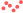
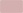
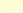
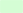

Bike+Ride
 | übergeordnete Festlegungen bestehende Bike + Ride Anlage |
 | übergeordnete Festlegungen geplante Bike + Ride Anlage |
kommunale Inhalte bestehende Bike + Ride Anlage | |
 | kommunale Inhalte geplante Bike + Ride Anlage |
Kommunaler Richtplan (rechtskräftig)
Der kommunale Richtplan behandelt alle für die räumliche Entwicklung der Stadt wesentlichen Aspekte wie Siedlung, Freiraum und Mobilität. Er ist hier verfügbar.
Der kommunale Richtplan ist ein behördenverbindliches Steuerungsinstrument. Verbänden, Planungsfachleuten und Privaten dient er als Orientierung. Er ist nicht parzellenscharf.
Die Stadt Winterthur ist für die kommunalen Inhalte verantwortlich. Übergeordnete Festlegungen liegen im Zuständigkeitsbereich des Kantons bzw. der Region.
Stand: Festsetzung vom April 1998 mit Änderungen bis zum 27. Mai 2016.
Der kommunale Richtplan wird gegenwärtig revidiert. Weitere Informationen finden Sie hier oder im Stadtplan (Kommunaler Richtplan (in Revision)).
Bike+Ride
| übergeordnete Festlegungen bestehende Bike + Ride Anlage |
| übergeordnete Festlegungen geplante Bike + Ride Anlage |
kommunale Inhalte bestehende Bike + Ride Anlage | |
| kommunale Inhalte geplante Bike + Ride Anlage |
Radrouten
 | übergeordnete Festlegungen bestehende Radroute |
 | übergeordnete Festlegungen geplante Radroute |
 | übergeordnete Festlegungen Radroute Variante / zu prüfende Linienführung |
übergeordnete Festlegungen bestehende Veloschnellroute | |
übergeordnete Festlegungen geplante Veloschnellroute | |
übergeordnete Festlegungen bestehende Radroute von nationaler Bedeutung | |
übergeordnete Festlegungen geplante Radroute von nationaler Bedeutung | |
kommunale Inhalte bestehende Radroute | |
 | kommunale Inhalte geplante Radroute |
 | kommunale Inhalte Radroute Variante / zu prüfende Linienführung |
Zentrumsfunktion
 | Zentrumsgebiet |
Grundnutzung
 | Baugebiet für Wohnen |
| Baugebiet für Wohnen und Arbeiten |
 | Baugebiet für Arbeiten |
 | Schutzwürdiges Ortsbild, Weiler |
 | Landwirtschaftsgebiet |
 | Erholungsgebiet E1/E2 |
 | Naturschutzgebiet |
| Rebschutzgebiet |
 | Wald |
 | Gewässer |
 | Verkehrsfläche |